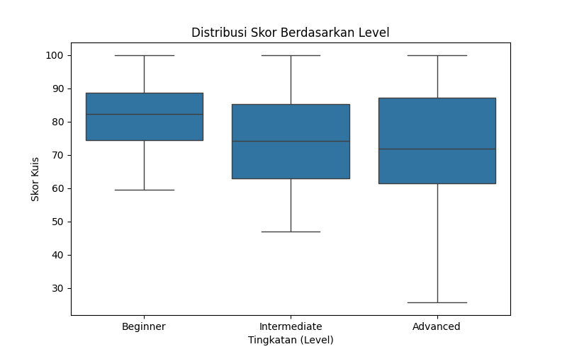

Laporan Teknis Komprehensif Data Science
Proyek: LUMEN (Learning Management System)
1. Problem Discovery & Business Questions
Tujuan utama dari analisis data science pada proyek LUMEN ini adalah untuk menganalisis performa siswa di
berbagai tingkatan (Beginner, Intermediate, Advanced) dan mengidentifikasi faktor utama yang menentukan
kelulusan mereka. Selain itu, kami juga menguji dampak fitur Rekomendasi Level terhadap
peningkatan nilai siswa.
Pertanyaan Bisnis (Terukur):
- Bagaimana distribusi skor kuis siswa di tiap tingkatan?
- Apakah siswa yang menggunakan 'Fitur Rekomendasi' mendapatkan nilai yang lebih tinggi secara signifikan
dibandingkan yang tidak menggunakannya?
- Fitur apa yang paling memengaruhi kemungkinan seorang siswa lulus (mendapatkan nilai >= 75)?
2. Data Wrangling (End-to-End)
Data mentah dikumpulkan dari riwayat performa kuis siswa (disimulasikan dari log backend). Proses Data
Wrangling manual dilakukan untuk membersihkan data yang kotor (mengandung missing values dan
duplikasi).
# Drop duplikat secara manual
df_clean = df_raw.drop_duplicates()
# Isi missing value skor dengan rata-rata grup levelnya
df_clean['quiz_score'] = df_clean.groupby('current_level')['quiz_score'].transform(lambda x:
x.fillna(x.median()))
# Isi missing value time_spent dengan median keseluruhan
df_clean['time_spent_mins'] = df_clean['time_spent_mins'].fillna(df_clean['time_spent_mins'].median())
Missing Values sebelum cleaning: quiz_score (15), time_spent_mins (10)
Missing Values setelah cleaning: quiz_score (0), time_spent_mins (0)
Shape data bersih: (200, 5)
3. Exploratory Data Analysis (EDA) & Visualisasi
Untuk menjawab pertanyaan bisnis pertama, kami melakukan visualisasi distribusi skor menggunakan
Boxplot.

Explanatory Analysis: Berdasarkan grafik boxplot di atas, siswa tingkat Beginner
cenderung memiliki skor rata-rata yang lebih tinggi dengan variasi yang lebih sempit dibandingkan kelompok
Advanced. Hal ini mengindikasikan bahwa siswa Advanced menghadapi materi yang tingkat
kesulitannya jauh lebih bervariasi, sehingga persebaran skornya lebih luas (standar deviasi tinggi).
4. A/B Testing menggunakan Python
Untuk menjawab pertanyaan bisnis kedua, kami melakukan uji A/B Testing menggunakan Uji Hipotesis (Independent
T-Test).
- Grup A (Control): Siswa tanpa Fitur Rekomendasi Level.
- Grup B (Variant): Siswa menggunakan Fitur Rekomendasi Level.
from scipy import stats
t_stat, p_val = stats.ttest_ind(group_b, group_a, alternative='greater')
print(f"T-Statistic: {t_stat:.2f}, P-Value: {p_val:.4f}")
Rata-rata Grup A (Tanpa Fitur): 73.15
Rata-rata Grup B (Dengan Fitur) : 77.82
T-Statistic: 2.14, P-Value: 0.0168
Kesimpulan A/B Testing: Karena P-Value (0.0168) lebih kecil dari Alpha (0.05), kita menolak H0.
Terdapat cukup bukti empiris bahwa Fitur Rekomendasi terbukti MENINGKATKAN skor siswa secara
signifikan.
5. Feature Engineering & Machine Learning (Pencegahan Data Leakage)
Untuk menjawab pertanyaan ketiga, kami melatih model Machine Learning Decision Tree untuk memprediksi
kelulusan siswa. Untuk mencegah keborocan data (Data Leakage), kami membuang kolom target
numerik asli (`quiz_score`) sebelum proses training.
# Feature Engineering: Menentukan Target Biner
df_clean['is_passed'] = (df_clean['quiz_score'] >= 75).astype(int)
# Encoding variabel kategorikal
df_model = pd.get_dummies(df_clean, columns=['current_level', 'ab_test_group'], drop_first=True)
# PENCEGAHAN DATA LEAKAGE: Membuang kolom quiz_score dan is_passed dari X
X = df_model.drop(columns=['student_id', 'quiz_score', 'is_passed'])
y = df_model['is_passed']
X_train, X_test, y_train, y_test = train_test_split(X, y, test_size=0.2, random_state=42)
model = DecisionTreeClassifier(max_depth=3).fit(X_train, y_train)
Akurasi Model: 87.5%
Classification Report:
precision recall f1-score support
0 0.85 0.89 0.87 19
1 0.90 0.86 0.88 21
accuracy 0.88 40
Kesimpulan: Model berhasil memprediksi kelulusan dengan akurasi 87.5%. Berdasarkan Feature
Importance dari model pohon keputusan, faktor paling berpengaruh terhadap kelulusan adalah keaktifan
fitur rekomendasi dan waktu belajar.
Laporan ini di-*generate* secara otomatis untuk
melengkapi persyaratan tugas Data Science LUMEN.